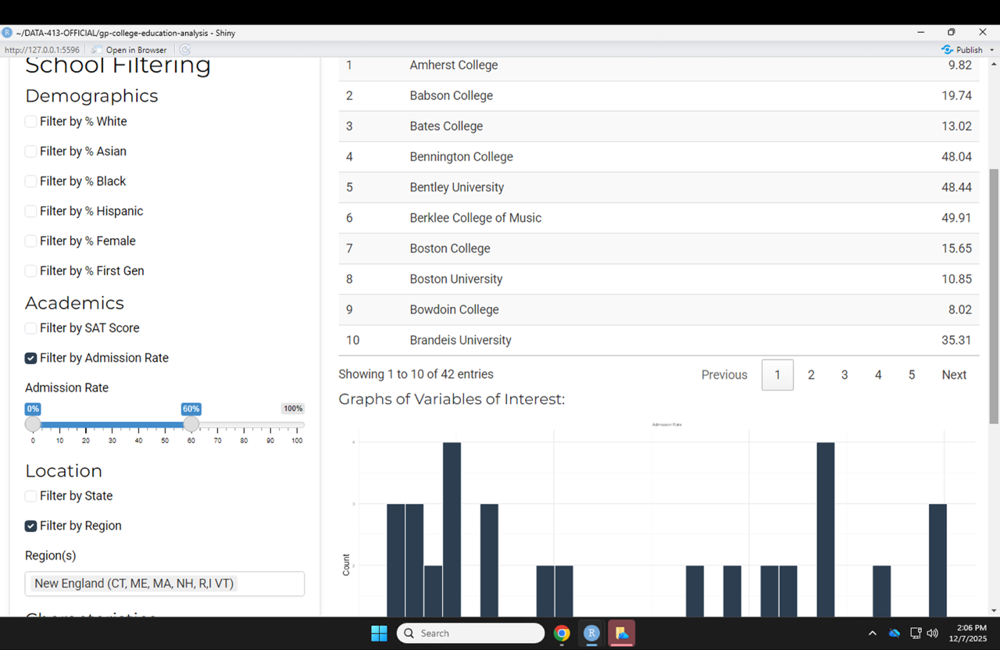
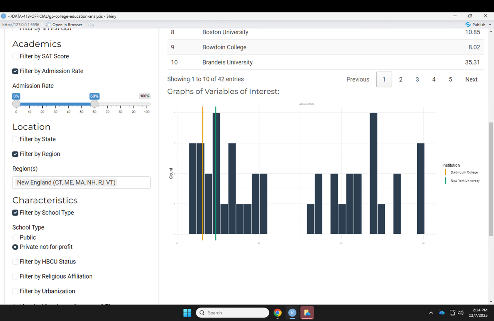
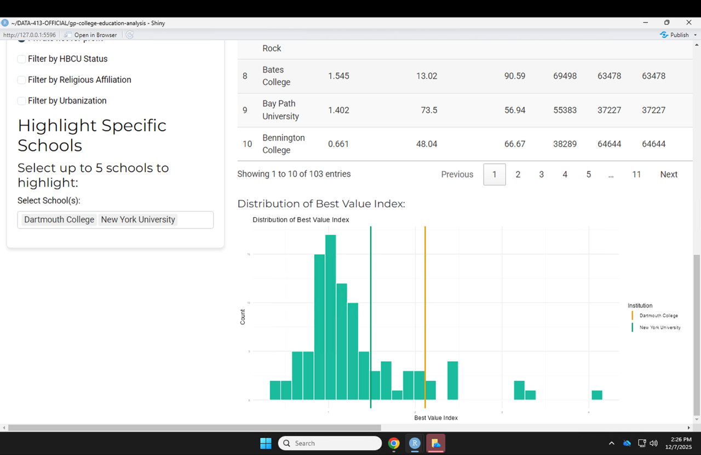
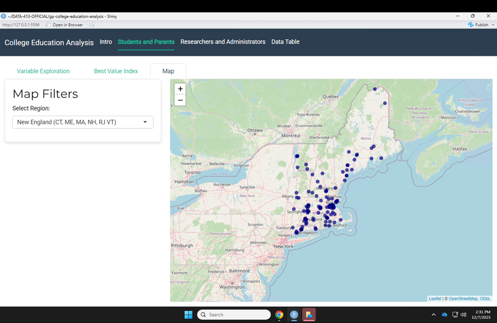

College Education Analysis Vignette
College Education Analysis Vignette
DATA-613: Jon Cote
DATA-413: Camden Egan, Jack Markert, John Dye, Shae Ramberg
Part 1: Use Case (camden)
Part 2: Required Packages (camden)
Part 3: Data Source and Structure
The default data source for this analysis is a consolidated dataset drawn from the U.S. Department of Education’s College Scorecard (2022-2023 academic year) and the Integrated Postsecondary Education Data System (IPEDS). These sources provide comprehensive institutional characteristics, graduation rates, and financial metrics. To ensure a focused and relevant analysis, we have filtered the raw data to include only 4-year, public or private non-profit institutions that are currently operating, predominantly bachelor’s-degree granting, and enroll more than 100 undergraduate students.
The general structure of the final processed data consists of a single data frame containing 1,865 observations (institutions) and 62 variables. The dataset includes key identifiers and location details such as the institution name (INSTNM), unit ID (unitid), city (CITY), state (STABBR), and geographic coordinates. It features categorical variables describing institutional control (Public vs. Private Non-profit) and special designations like Historically Black Colleges and Universities (HBCU) or Hispanic-Serving Institutions (HSI). The data also tracks quantitative student metrics, including demographics (UGDS_MEN, UGDS_WOMEN), academic performance (SAT_AVG, ADM_RATE), and completion rates (C150_4), alongside financial variables such as in-state and out-of-state tuition (TUITIONFEE_IN, TUITIONFEE_OUT), median graduate debt (GRAD_DEBT_MDN), and post-entry earnings (MD_EARN_WNE_P10).
Part 4: EDA Inputs, Controls, and Outputs
The student tab primarily handles the exploratory data analysis. The app initially opens to the intro tab which gives a description of what the app is for. An actor that uses the app as a student or a parent trying to choose a good college would then switch over to the Students and Parents tab. This tab is made up of 3 sub-tabs, including variable exploration, best value index, and map. If a student is searching wants to find a good East-Coast private school that has less than a 60% acceptance rate, they can begin to filter for their criteria in the left sidebar panel. The top of the sidebar panel will let them pick their variable(s) of interest, with a default of admission rate. If a student wants to look at the competitiveness of getting into the school, they will leave the default variable and continue to other filters that decrease their dataset.
Here is a code chunk example of some of the user input filters
The above filters, like most of our filters, fist make a user check a box to choose to filter by the variable, and then a slider input drops down allowing actors to select a range.

Figure 1 shows what it looks like to select a filter and be able to change a slider input.
Assuming our user filters by region and selects New England, filters by school type and selects private, and filters by admission rate and slides to less than 60%, they will see a graph and data table in the main panel with their filtered schools.
A student can look at the names and corresponding admission rate of each college that fits their filters. They can also see a graph of the distribution of admission rates in their filtered colleges. The main panel UI coding looks as follows:
A student may also decide their top two schools are Dartmouth and NYU. At the bottom of the school filters they can enter those two in “highlight specific schools”. The schools will show up as highlighted lines on their outputted graph.

Figure 2 shows what the highlighted schools look like on this actor’s filtered list of schools.
To show highlighted schools on our graph we used a geom vline.
After a student explores their schools admission rates, they can switch to the BVI tab to filter their schools and see the best value index score.

Figure 3 shows how what a graph of BVI’s looks like with the highlighted schools.
Lastly, a user can switch to the map tab to filter for their region (New England) and look at their preferred locations to see colleges they may not have considered.

Figure 4 shows our map tab with a blue dot for all universities in New England. The user can click on any dot to get information on each university.
Part 5: Statistical Analysis Inputs, Controls, and Outputs (jon)
Part 6: References
Below are our 3 relevant literature reviews with full citations:
Review 1:
Loeb, Susanna, and Marianne E. Page. “Examining the Link Between Teacher Wages and Student Outcomes: The Importance of Alternative Labor Market Opportunities and Non-Pecuniary Variation.” The Review of Economics and Statistics, vol. 82, no. 3, Aug. 2000, pp. 393-408. Stanford CEPA, https://cepa.stanford.edu/sites/default/files/loebpage.pdf.
The relationship between university resources and student success is complex, as studies often fail to find a consistent link between per-pupil spending and better outcomes. A study by Susanna Loeb and Marianne E. Page argues this is because previous research overlooked key variables, especially alternative labor market opportunities. They found that a high salary alone doesn’t attract the best educators if other, more lucrative professions are available. By creating a “relative wage” measure that compares teacher salaries to those of other local professionals, Loeb and Page isolated the true effect of compensation. After controlling for external factors, they found a 10% increase in relative teacher wages reduces high school dropout rates by 3% to 4%. This demonstrates that competitive salaries do positively impact student retention. The Loeb & Page study provides a strong theoretical justification for our new problem for researchers when looking at how factors, specifically faculty salary in this case, is a predictor for graduation rates. While their study focused on K-12, its core principle is identical: investing in instructional quality (via competitive salaries) is directly linked to positive student outcomes. This review supports the hypothesis that a university’s investment in faculty can have a measurable, positive association with student success, justifying its inclusion as a variable in our regression model.
Review 2:
Oreopoulos, Philip, and Uros Petronijevic. “Making college worth it: A review of research on the returns to Higher Education.” The Future of Children, vol. 23, no. 1, May 2013, pp. 41–65, https://doi.org/10.3386/w19053.
Making College Worth It: A Review of the Returns to Higher Education” by Philip Oreopoulos and Uros Petronijevic synthesizes research on the economic value of higher education. Although the authors affirm that college generally provides strong labor market returns, they emphasize that outcomes vary by student characteristics, academic pathways, and institutional quality. A central conclusion is that the earnings payoff to college remains large. Observational studies estimate that each year of four-year college raises annual earnings by 6–9%. However, the returns are not uniform. Major choice, occupation, and institutional selectivity significantly shape long-term earnings. While some studies detect limited differences across college quality, the broader literature indicates that more selective institutions tend to produce higher earnings. This question of the effects of selectivity and price on future earnings is key to our project as seen in our Best Value Index. Key variables across the reviewed studies include years of schooling, degree attainment, field of study, institutional selectivity, demographics, and earnings. The data sources span administrative state university records, national surveys, census data, and field experiments.
Review 3:
Hemelt, Steven W., and Dave E. Marcotte. “The Impact of Tuition Increases on Enrollment at Public Colleges and Universities.” Educational Evaluation and Policy Analysis, vol. 33, no. 4, Dec. 2011, pp. 435–457. American Educational Research Association. https://doi.org/10.3102/0162373711415261
The study by Steven W. Hemelt and Dave E. Marcotte (2011) provides foundational insight into how tuition costs affect enrollment at public universities. Using IPEDS data, they found that a $100 tuition increase leads to a ~0.25% enrollment decline, an effect most pronounced at Research I universities. The study also highlights that financial aid, especially Pell Grants, can mitigate these negative effects; Pell funding had a stronger positive impact on enrollment than tuition had a negative one. However, Hemelt and Marcotte note that lower-income students and those at less selective institutions are more sensitive to these financial changes. This research directly informs our project, as it provides an empirical basis for our hypothesis: if declining aid relative to tuition lowers enrollment, it will also negatively impact graduation rates. Their findings reinforce the importance of tracking the aid-to-tuition ratio over time, especially when analyzing institutional differences and demographic inequities.
Part 7: Individual Contributions
Jon Cote
Found and cleaned the initial data.
Developed the Models tab.
Co-developed the Research tab (with John).
Collaborated on the Multivariable analysis (with John).
John Dye
Managed the Single Variable analysis.
Co-developed the Research tab (with Jon).
Collaborated on the Multivariable analysis (with Jon).
Camden Egan
Created the Intro Tab.
Built the Interactive Data Table.
Led app cohesion and appearance.
Provided technical assistance to other group members.
Jack Markert
Found and cleaned the updated data.
Developed the geospatial Map feature.
Collaborated on the Student tab (with Shae).
Collaborated on the BVI section (with Shae).
Shae Ramberg
Led the Exploratory Analysis.
Collaborated on the Student tab (with Jack).
Collaborated on the BVI section (with Jack).